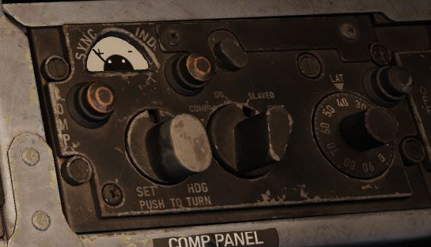
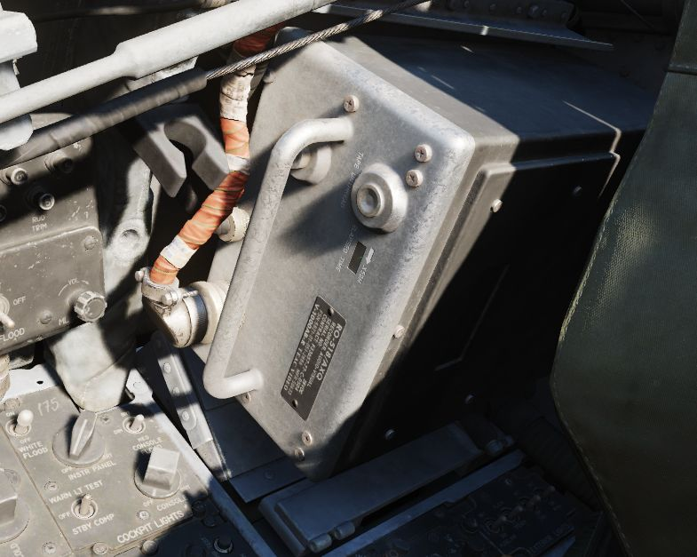

Aft Section
Compass Control Panel

Manages essential controls for the proper operation of the AJB-7 azimuth system. Essential for accurate azimuth output to instruments like ADI, HSI, BDHI, but also to the rear seat attitude indicator, autopilot, and bombing computer.
Mode Selector Knob
Switches between different operating modes — Compass, DG (directional gyro), and Slaved. It also has a spring-loaded SYNC position for fast synchronization of the azimuth system based on the compass flux valve signal.
| Name | Description |
|---|---|
| COMP (Compass) | Used in emergencies when the reference systems fail. Supplies magnetic heading directly from the flux valve |
| DG (Directional Gyro) | Used in extreme latitudes and regions with magnetic distortion, the initial magnetic heading needs manual adjustment. If the reference system is set to STBY, the aircraft's latitude must be adjusted on the latitude knob. |
| Slaved | Primary operational mode under typical conditions, it depends on signals from the flux valve for a gradual synchronization of the system. |
| SYNC | Spring-loaded to return to SLAVED, facilitates fast synchronization between the compass flux valve and azimuth reference. |
Hemisphere Switch and Latitude Control Knob
Adjusted to set the aircraft's hemisphere and latitude in the DG Compass System mode, when operating with the STBY reference system. The hemisphere is determined by rotating the screw above the latitude knob. When the PRIM reference system mode is active, setting a latitude other than zero will cause errors by doubling drift compensation due to INS corrections.
Set Heading Control Knob
Push-to-turn knob, spring-loaded to return to the center, permits manual adjustment of the azimuth, crucial when operating in the DG mode.
Sync Indicator
Displays the azimuth deviation between the flux valve signal and the internal reference system.
Exterior Lights Control Panel

This panel contains controls connected to most of the exterior lighting:
- 3 position lights (green, red, white)
- 2 wingtip join-up lights (green, red)
- 3 fuselage lights (white)
- anti-collision tail light with 2 lamps (red)
Three switches labelled Fuselage, Tail and Wing control brightness of the lights between BRT (Bright), DIM and OFF.
To ensure lights are available even in case of power failure conditions, the BRT and DIM selections are routed through different buses:
| Lamp | Bus |
|---|---|
| Bright | Right Main 28V DC Bus |
| Dim | Left Main 14V AC Bus |
| Anti-Col 1 | Right Main 14V AC Bus |
| Anti-Col 2 | Left Main 14V AC Bus |
Fuselage Switch
Controls the three white fuselage lights.
Additionally, if set to BRT and the Flasher Switch is set to FLASH, both anti-collision lights illuminate.
Tail Switch
Controls the position light on the tail.
Wing Switch
Controls two of the three position and the two join-up lights on the wingtips.
Flasher Switch
Can be set to OFF, STEADY or FLASH to additionally control the setting for:
- one of the two anti-collision lamps
- tail position light
- fuselage lights
If set to OFF, the controlled lights are OFF regardless of their respective switches. In the STEADY position, they light up corresponding to the selected brightness. The FLASH position lets the controlled lights phase from the set brightness to a low brightness and back.
Airborne Video Tape Recorder

The AVTR system is installed in the rear section to the right of the seat. It is primarily controlled by the WSO and records the intercom sound, as well as the rear radar screen.
Footage is recorded on a standard u-matic S cassette, which can be removed and replaced using the EJECT Button on the top right of the box. The UNTHREAD button next to it is used to unthread the tape of the cassette back to the start, causing it to overwrite previously recorded footage.
The cassette can record up to 20 minutes, indicated on the small display labelled ELAPSED TIME.
In DCS, footage is saved in the users Saved Games folder, for example:
C:\Users\JohnDoe\Saved Games\DCS.openbeta\F-4E\recorders\avtr
Seat
Seat Position

The vertical position of the seat can be changed in either direction for about 5cm using this spring-loaded switch. For landing, it is advisable to put the seat in the most upward position for better visibility.
Operation of the motor must be limited to 30 seconds within 10 minutes to prevent it from overheating and breaking.